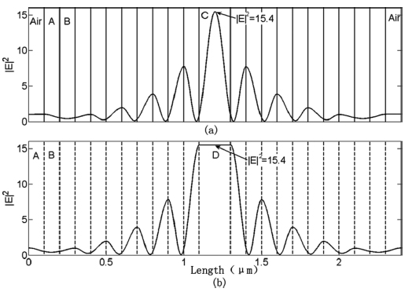

Enhanced homogeneous fields are realized in a zero-index medium embedded in Bragg reflectors. When the zero-index medium has Kerr-type nonlinearity, the threshold for optical bistability can be reduced noticeably due to the enhanced uniform fields. Based on a transmission line, we fabricate an effective zero-index medium sandwiched in electric and magnetic walls and experimentally demonstrate the enhanced nearly uniform fields.
Fig.1 Schematic of a 1D PC embedded with a dielectric defect. It shows that the intensity of field in ZIM defect(D) is flat in contrast with field in normal dielectric defect(C)